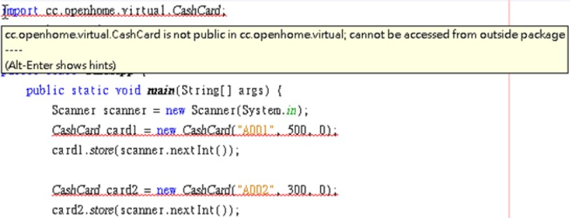

public／建構式／重載
May 28, 2022在〈流程與資料的封裝〉的 CashCard 類別是定義在 cc.openhome 套件，假設現在為了管理上的需求，要將 CashCard 類別定義至 cc.openhome.virtual 套件。
public 權限修飾
除了原始碼與位元碼的資料夾需求必須符合套件階層之外，原始碼內容也得作些修改：
package cc.openhome.virtual;
class CashCard {
...
}
這一改可不得了，你發現使用到 CashCard 的程式碼都出錯了：

宣告為 private 的成員表示為類別私有，使用者無法在其他類別的程式碼中直接存取。如果沒有宣告權限修飾的成員，只有在相同套件的類別程式碼中，才可以直接存取，也就是「套件範圍權限」。如果不同套件的類別程式碼中，想要直接存取，就會出現上圖的錯誤訊息。
如果想在其他套件的類別程式碼中存取某套件的類別或物件成員，則該類別或物件成員必須是公開成員，要使用 public 加以修飾。例如：
package cc.openhome.virtual;
public class CashCard {
...略
public CashCard(String number, int balance, int bonus) {
...略
}
public void store(int money) {
...略
}
public void charge(int money) {
...略
}
public int exchange(int bonus) {
...略
}
public int getBalance() {
return balance;
}
public int getBonus() {
return bonus;
}
public String getNumber() {
return number;
}
}
你可以宣告類別為 public，這表示它是個公開類別，可以在其它套件的類別中使用，你可以在建構式上宣告 public，這表示其他套件中的類別可以直接呼叫這個建構式，你可以在方法上宣告 public，這表示其他套件的方法可以直接呼叫這個方法。如果你願意，也可以在物件資料成員上宣告 public。
〈package 與 import〉談過，套件管理還有權限管理上的概念，沒有定義任何權限關鍵字時，就是套件權限。
如果類別上沒有宣告 public 權限關鍵字，類別中的方法宣告就算是 public，也等於是套件權限了，因為類別本身是套件權限，其他套件根本就無法使用類別了，更別說當中定義的方法。
關於建構式
在定義類別時，可以使用建構式定義物件建立的初始流程。建構式是與類別名稱同名，無需宣告傳回型態的方法。例如：
public class Some {
private int a = 10; // 指定初始值
private String text; // 預設值 null
public Some(int a, String text) {
this.a = a;
this.text = text;
}
...
}
若如下建立 Some 物件，成員 a 與 text 會初始兩次：
var some = new Some(10, "some text");
建構物件時，資料成員就會初始化，如果沒有指定初始值，會使用預設值初始化，預設值如下表所示：
| 型態 | 初始值 |
|---|---|
byte |
0 |
short |
0 |
int |
0 |
long |
0L |
float |
0.0F |
double |
0.0D |
char |
\u0000（空字元） |
boolean |
false |
| 類別 | null |
使用 new 建構Some物件時，a 與 text 分別先初始為 10 與 null，之後會再經由建構式流程，設定為建構式參數的值。如果定義類別時，沒有撰寫任何建構式，編譯器會自動加入一個無參數、內容為空的建構式。例如若如下撰寫：
public class Some {
}
將這個類別編譯後的位元碼反組譯，你會看到：
public class Some {
public Some() {
}
}
正因為編譯器會在沒有撰寫任何建構式時，自動加入預設建構式（Default constructor），才可以在沒有撰寫任何建構式時，也可以如下以無引數方式呼叫建構式：
var some = new Some();
只有編譯器自動加入的建構式，才稱為預設建構式，如果你自行撰寫無參數、沒有內容的建構式，就不稱為預設建構式了，雖然只是名詞定義，不過認證考試時要區別一下兩者的不同。
如果自行撰寫了建構式，編譯器就不會自動建立預設建構式。如果你這麼寫：
public class Some {
public Some(int a) {
}
}
那就只有一個具 int 參數的建構式，所以就不可以 new Some() 來建構物件，而必須使用 new Some(1) 的形式來建構物件。
重載
視使用情境或條件的不同，建構物件時也許希望有對應的初始流程，你可以定義多個建構式，只要參數型態或個數不同，這稱為重載（Overload）建構式。例如：
public class Some {
private int a = 10;
private String text = "n.a.";
public Some(int a) {
if(a > 0) {
this.a = a;
}
}
public Some(int a, String text) {
if(a > 0) {
this.a = a;
}
if(text != null) {
this.text = text;
}
}
...
}
在這個程式碼片段中，建構時有兩種選擇，一是使用 new Some(100) 的方式，另一個是使用 new Some(100, "some text") 的方式。
有些場合建議，如果定義了有參數的建構式，也可以加入無參數建構式，即使內容為空也無所謂，這是為了日後使用上的彈性，例如運用反射（Reflection）機制生成物件的需求，或者是繼承時呼叫父類別建構式時的方便。
定義方法時也可以進行重載，可為類似功能的方法提供統一名稱，但根據參數型態或個數的不同呼叫對應的方法。以 String 類別為例，valueOf 方法就提供了多個版本：
public static String valueOf(boolean b)
public static String valueOf(char c)
public static String valueOf(char[] data)
public static String valueOf(char[] data, int offset, int count)
public static String valueOf(double d)
public static String valueOf(float f)
public static String valueOf(int i)
public static String valueOf(long l)
public static String valueOf(Object obj)
雖然呼叫的方法名稱都是 valueOf，但根據傳遞的引數型態不同，會呼叫對應的方法，例如呼叫 String.valueOf，因為 10 是 int 型態，會執行 valueOf(int i) 的版本，若是 String.valueOf(10.12)，因為 10.12 是 double 型態，會執行 valueOf(double d) 的版本。
方法重載讓程式設計人員不用苦惱方法名稱的設計，可用一致的名稱來呼叫類似功能的方法，方法重載可根據傳遞引數的型態不同，也可根據參數列個數的不同來設計方法重載。例如：
public class SomeClass {
public void someMethod() {
}
public void someMethod(int i) {
}
public void someMethod(float f) {
}
public void someMethod(int i, float f) {
}
}
傳回值型態不可作為方法重載依據，例如以下方法重載並不正確，編譯器會將兩個 someMethod 視為重複定義而編譯失敗：
public class Some {
public int someMethod(int i) {
return 0;
}
public double someMethod(int i) {
return 0.0;
}
}